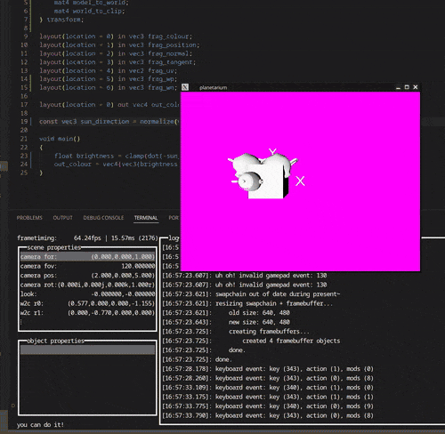

post-process shader showing off access to the different G-buffers
post-process shader showing off access to the different G-buffers
planetarium is an ongoing project where i'm teaching myself the Vulkan API. the project idea is to create a Google Earth-style tool (probably also reading data from the Earth Engine API) to visualise both the Earth and the night sky.
so far, i've got the GPU initialised, 3D model loading, shaders and uniforms, textures, depth buffering, render-to-texture and post-processing, scene and material description via text files, multiple lights of different types, gizmos, and a bunch more. still a long way to go!
one of my goals is for the world to be navigable primarily via controller, which i've implemented fully on Linux but not Windows.
post-process shader showing off access to the different G-buffers

early demo with a simple shader and the classic test meshes suzanne without the depth buffer implemented
suzanne without the depth buffer implemented